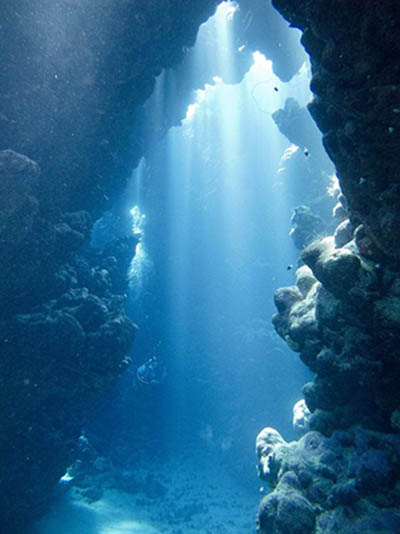

Cenote diving is divided into two very distinct and different disciplines: Cavern Diving and Cave Diving
Deep within the tropical rain forest of the Yucatan Peninsula, concealed just beneath its jungle canopy, the adventurous traveller will find a natural wonder of the diving world… a network of underwater cave systems which connects the Dzonot or “Scared Wells” of the Ancient Mayans with the ocean.
Now more commonly known as Cenotes, these interconnected entrances hide an oddly alien yet beautiful realm which is guaranteed both to take your breath away and leave you wanting more. The Yucatan is home to the 5 longest, and arguably most beautiful, underwater cave systems in the world which are visited by diving fanatics from around the globe coming to explore their depths. Many of these divers end up so enchanted with the magnificence hidden below the waters surface that they simply never leave.
During the dive, you and your guide will use the supplied flash lights to search through the cavern for its treasures while always remaining safely within view of daylight and within 18m (60ft) of an exit. And it is not just the rock formations you will be looking for. Many of the caverns contain both human and animal remains as well as some animal life, much of which is unique to the Mexican cenotes.
Join us and before you arrive at the dive site, you will be given a full history of how and when these cave systems were formed, as well as have an in depth understanding of how the speleothems (stalactites and stalagmites) and other rock formations came to be.
After the dive, after facing the awe of one of these systems, you’ll once again appreciate the God’s handiwork here on earth as well as have the privilege of knowing that you have seen, first-hand, a world many won't even know of.
(Minimum age 18, Minimum certification of TDI Introductory Cave Diver, or equivalent. If decompression dives are to be conducted in training, the student must be TDI Decompression Procedures certified or equivalent, or this training may be conducted concurrently. If courses are taught concurrently, ALL requirements for both courses must be met and registrations processed upon completion)
To pretend that technical diving is just simply a step up from recreational diving is both a gross understatement and a massive disservice to the sport. All technical courses require you to take a long, hard look at yourself and ask the following questions:
- Am I willing to put it all on the line to step into the realm of the unknown, to experience a world that only a handful of people will ever appreciate?
- When it all goes seriously wrong, do I have the mental fortitude to keep a level head to find a solution and get myself out the of water alive.
As the sport with the highest death rate per attempt, cave diving is no exception to the above and it truly separates the men and women from the boys and girls. At Cthulhu Divers, we take pride in the fact that neither our instructors, nor any of our students, have ever had a cave diving incident that we weren’t able to handle and walk swim away from.
So what does that mean to you as perspective student? It means if you are just looking for another certification where you get your hand held, go speak to our competition and risk finding your name in the obituaries. Alternatively, if you are looking to be taught by literately the most highly certified tech divers in Quintana Roo, we will challenge you to become both one of the safest and one of the best.
On the full 10 day TDI Cave Diving Course, you can expect to learn the following:
- Standard cave diving policies
- Gas management procedures and management to include dissimilar volumes
- Psychological considerations of cave diving
-
- Equipment considerations including:
- Cylinder options
- Regulator options
- Buoyancy compensator/harness options
- Proper weighting
- Reel options
- Equipment configurations
- Communication (light and hand signals)
- Swimming techniques
- Body posture/trim
- Buoyancy control
- Line following
- Propulsion (finning) techniques
- Physiology
- Breathing techniques
- Stress management
- Decompression theory and its application to cave diving
- Cave environment
- Conservation
- Problem solving
- Emergency procedures
- Equipment failure
- Silting conditions
- Accident analysis
- Cave diving etiquette
| Dive Site | Depth | Training site for the... |
|---|---|---|
| Aktun Ha (aka: Carwash) | 27m (90ft) | Intro To Cave Course |
| Angelita | 60m (199ft) | Intro To Cave Course |
| Calavera (aka: Temple of Doom) | 25m (82ft) | Cavern Diver Course |
| Chak-mool | 30m (98ft) | Full Cave Course |
| Chikin Ha | 19m (63ft) | Sidemount Course |
| Dos Ojos | 118m (387ft) | Digital Underwater Photographer Course |
| Dream Gate | 10m (33ft) | Sidemount Course |
| Gran Cenote | 19m (63ft) | Full Cave Course |
| Pit | 19m (63ft) | Multilevel Diver Course |
| Pet | 19m (63ft) | Cavern Diver Course |
| Ponderosa | 19m (63ft) | Cavern Diver Course |
| Tajma Ha | 19m (63ft) | Intro To Cave Course |
| Tank Ha (aka: Casa Cenote) | 10m (33ft) | Sidemount Course |